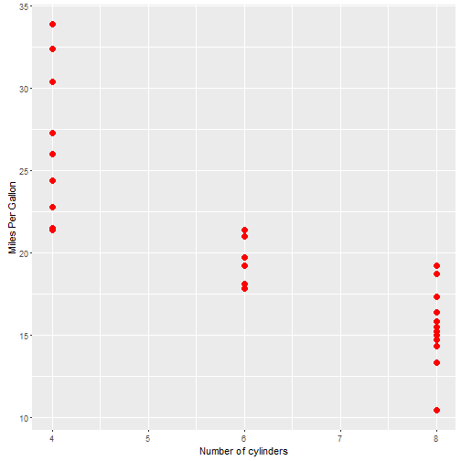

- Purpose and Information
- Embedded R Code
- Instructions to use
KS
MES System
This Shiny application is my submission for the assignment of the course Developing Data Products, part of the Data Science Specialization offered by the Johns Hopkins University. This is an interactive web based application, frameworked in R, for Automobile Exploratory Data Analysis
This application is built based on the data of 1974 Motor Trend US magazine, and comprises fuel consumption and 10 aspects of automobile design and performance for 32 automobiles (1973 - 74 models).
ggplot2 was used for the plotting. The following page is the code for a static view of the default plot that is rendered on the web app
Embedded R Code
library(ggplot2); data(mtcars); dataset <- mtcars
ggplot(dataset,aes_string(x='cyl', y='mpg')) + geom_point() + geom_point(size=3,color='red') +
labs( x= 'Number of cylinders', y = "Miles Per Gallon")

To reproducing this app locally on your computer, you would need to follow these steps:
install.packages("shiny")
library(shiny)
runApp('mpg')